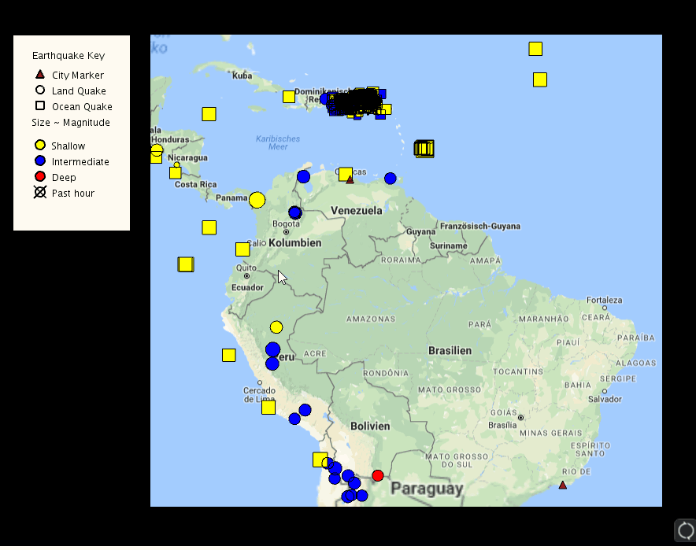
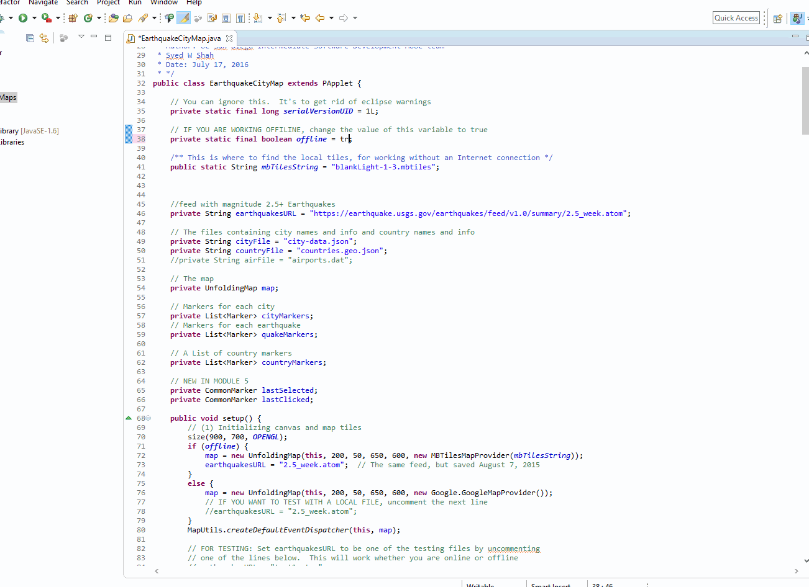

A fun meme sharing app

This project was created with Rails for the Back-End, and a React Front-End
An app where people can search information about beer and also favorite them!
Also, REEB is just "BEER" backwards

This project was created with Express.js and React
An app where people can place a marker on the map when they are about to leave a parking spot,
so that someone else may take it, hence the name Courtesy Parking
I created this project because, we could all use a little bit of courtesy when it comes to one of the most frustrating problems in an urban environment. I figure it may be a good starting point for a problem most driver's find to be a nuisance.

This project was created with Express.js
An app where you can check the weather by inputting your US zipcode

This project was created with Node.js
Or try it yourself by clicking here!
A fictional store page which sells items which are just pop-culture references to tv-shows and games.

This project was created with HTML/CSS/jQuery
Or try it yourself by clicking here!
A cute calculator

When I wanted to practice Flat Art Design, but did not have any nice software to create it
I decide to challenge myself and decided to make it using only css

Fun / Misc
99% of the Time
I knew someone who would say "99% of the time" so frequently
I figured it would be funny to make an animation of it, which we could use when he would want to say that
Check it out here:
Live Earthquake Map
This project was written in Java, and it lets you view live earthquake data
You can even view this project offline if you run out of API calls to the map service
This earthquake map project was the precursor to my interest in software development. It was my first Java project, and it inspired me to want to continue writing code. When I first started this project, I didn't think I would end up with this result, I surprised myself. I sometimes look back at this project and use it as encouragement to continue my endeavors as a programmer.